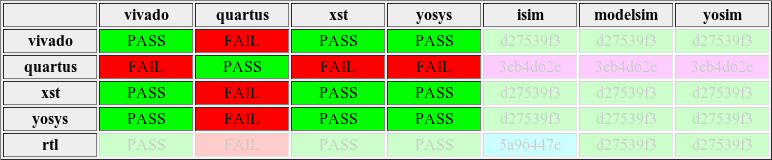

VlogHammer
VlogHammer is a Verilog regression tester used to verify the correctness of Yosys's Verilog frontend. At the moment VlogHammer only tests combinatorial circuits described using Verilog expressions.
VlogHammer also exposed a couple of bugs in other programs. Here is a list of currently open bugs found using VlogHammer:
| Bug ID | Last checked | Title |
| issue_001_quartus | Quartus 17.0 | Quartus handling of constant first argument in Verilog ?: operator |
| issue_002_quartus | Quartus 17.0 | Quartus Verilog bug in handling $signed in an unsigned expression |
| issue_003_quartus | Quartus 17.0 | Quartus Verilog bug in signdness handling of 2nd shift operand |
| issue_016_quartus | Quartus 17.0 | Bug in Quartus signed/unsigned handling in power operator |
| issue_021_quartus | Quartus 17.0 | Quartus hangs on power operations with large exponents |
| issue_021_vivado | Vivado 2018.3 | Vivado hangs on power operations with large exponents |
| issue_026_quartus | Quartus 17.0 | Incorrect bit-extension of undef const in ?: operator |
| issue_029_quartus | Quartus 17.0 | Handling of large constant RHS in shift operator |
| issue_031_quartus | Quartus 17.0 | Invalid optimization of or-reduce with undef bits |
| issue_040_verilator | Verilator 3_906 | Verilator uses undeclared helper function for power op > 64 bits |
| issue_042_quartus | Quartus 17.0 | Invalid optimization of reduce expression with undef bits |
| issue_044_quartus | Quartus 17.0 | Ignored width extension for constant ?: condition |
| issue_057_quartus | Quartus 17.0 | Quartus handling of partly out-of-bounds parts select |
| issue_057_verilator | Verilator 3_906 | Incorrect results with partially out-of-bounds part select |
| issue_057_vivado | Vivado 2018.3 | Vivado handling of partly out-of-bounds parts select |
| issue_058_vivado | Vivado 2018.3 | Strange Vivado bug involving seemingly unrelated expressions |
| issue_059_vivado | Vivado 2018.3 | Vivado hangs forever on modulo with undefined (X) value |
And here is a list of now closed bugs found using VlogHammer:
| Bug ID | Fixed in | Title |
| issue_000_verific | Verific 463_32_140722 | Verific sign handling bug in {N{...}} Verilog operator |
| issue_002_verilator | Verilator GIT 14fcfd8 | Verilator bug in handling $signed in an unsigned expression |
| issue_003_verilator | Verilator GIT b631b59 | Verilator bug with shift, expression width and signedness |
| issue_004_vivado | Vivado 2015.1 | Strange output-const-zero bug with Vivado + >>> + signedness |
| issue_005_verilator | Verilator GIT 5c39420 | Verilator bug in extending $signed |
| issue_008_verilator | Verilator GIT fb4928b | Strange Verilator behavior with power, signdness and more |
| issue_010_vivado | Vivado 2015.1 | Vivado creates netlist with inputs shorted together |
| issue_011_icarus | Icarus GIT d1c9dd5 | Icarus Verilog vvp asserts on reduce of one-bit .arith/sub |
| issue_012_icarus | Icarus GIT 68f8de2 | Icarus Verilog undef propagation bug in power operator |
| issue_013_icarus | Icarus GIT ac3aee0 | Icarus Verilog signedness handling in binary bitwise operations of constants |
| issue_014_vivado | Vivado 2014.2 | Vivado GDpGen::implementDivMod(DFNode*, bool): Assertion `TBD' failed. |
| issue_015_vivado | Vivado 2014.2 | Vivado bug in undef handling for relational operators |
| issue_016_verilator | Verilator GIT ff19dd9 | Bug in Verilator signed/unsigned handling in power operator |
| issue_017_xsim | XSim 2015.1 | Bug in XSIM when combining reduce op and $signed/$unsigned |
| issue_019_xsim | XSim 2015.1 | XSim implements 0 ** -1 incorrectly |
| issue_020_xsim | XSim 2014.1 | XSim fails to recognize signed expression with shift in localparam |
| issue_021_icarus | Icarus GIT 66bdbb7 | Icarus Verilog efficiency of verinum and vpp_net pow() functions |
| issue_021_verific | Verific 463_32_140722 | Verific hangs on power operations with large exponents |
| issue_021_xsim | XSim 2017.2 | XSim hangs on power operations with large exponents |
| issue_022_icarus | Icarus GIT ecce1d2 | Icarus Verilog: internal error: lval-rval width mismatch |
| issue_023_icarus | Icarus GIT 5dcd2e8 | Icarus Verilog creates huge in-memory arrays for shifts with large rhs |
| issue_024_icarus | Icarus GIT 5a06602 | Icarus Verilog bug in processing "1'b1 >= |1'bx" |
| issue_025_icarus | Icarus GIT a3450bf | Icarus does undef propagation of const adds incorrectly |
| issue_026_vivado | Vivado 2018.3 | Incorrect bit-extension of undef const in ?: operator |
| issue_028_icarus | Icarus GIT ed2e339 | Icarus does undef propagation of const multiplies incorrectly |
| issue_029_icarus | Icarus GIT 020e280 | Icarus only using the lowest 32 bits of right shift operand |
| issue_029_verific | Verific 463_32_140722 | Verific only using the lowest 32 bits of right shift operand |
| issue_029_xsim | XSim 2017.2 | Handling of large RHS in shift operator |
| issue_032_icarus | Icarus GIT bc9382e | Icarus confused about signed/unsigned in strange ?: example |
| issue_033_verific | Verific 482_32_150519 | Verific incorrectly const folds a == 1'bx |
| issue_034_verilator | Verilator GIT d04eb97 | Verilator thinks ~|a and ~(|a) are the same thing |
| issue_035_verilator | Verilator GIT adb39ce | Verilator bug in signed/unsigned expression eval |
| issue_037_verilator | Verilator GIT a985a1f | Verilator bug with signedness and arithmetic shift |
| issue_038_verilator | Verilator GIT 4a58e85 | Verilator bug in signdness of {..} |
| issue_039_verilator | Verilator GIT 621c515 | Verilator Internal Error for shift by undef value |
| issue_041_verilator | Verilator GIT 6ce2a52 | Yet another Verilator shift bug |
| issue_042_verilator | Verilator GIT 5f5a3db | Bug in evaluating (defined) expression with undef bits |
| issue_043_verilator | Verilator GIT d7e4bc1 | Segfault in code generated by Verilator |
| issue_045_verilator | Verilator GIT 06744b6 | Verilator internal fault related to huge shifts |
| issue_046_verilator | Verilator GIT 06744b6 | Verilator bug in sign extending special boolean expression |
| issue_048_icarus | Icarus GIT b7b77b2 | Another strange icarus expression eval bug (large shifts) |
| issue_049_verilator | Verilator GIT f705f9b | Another Verilator Internal Error for shift by undef value |
| issue_050_verilator | Verilator GIT f705f9b | Verilator returns incorrect expression result |
| issue_051_verilator | Verilator GIT e8edbad | Another Verilotor bug with large shifts |
| issue_052_verilator | Verilator GIT e8edbad | Strange Verilator "Unsupported" Error |
| issue_053_verilator | Verilator GIT e8edbad | Incorrect results with XNOR/shift expression |
| issue_054_verific | Verific 482_32_150519 | Verific sign handling in {N{...}} and {...} again |
| issue_055_verific | Verific 482_32_150519 | Verific uses incorrect width for self-determined division |
| issue_056_verific | Verific 482_32_150519 | Strange Verific bug with replicate and xor-reduce |
The latest publicly released VlogHammer report can be viewed here (use of Google Chrome or Mozilla Firefox is highly recommended). The text below describes what VlogHammer does and how to interpret the report. So keep reading! Alternatively watch the screencast for a quick overview.
VlogHammer compares the implementation generated by Yosys with the implementations generated by the following proprietary free-to-use tools:
- Xilinx Vivado WebPack
- Xilinx ISE (XST) WebPack
- Altera Quartus Web Edition
In addition the behavior of the generated circuits is compared of the behavior described in the original Verilog code, as interpreted by the following Verilog Simulators:
- Xilinx Isim (bundled with Xilinx ISE)
- Xilinx XSim (bundled with Xilinx Vivado)
- Mentor Modelsim (bundled with Altera Quartus II)
- Icarus Verilog (free software)
I have found bugs in Yosys and all of the above tools (with the exception of Modelsim) using VlogHammer. The bugs in Yosys have been fixed and I share my results in the hope that it will help the vendors of the other tools to fix the bugs in their programs.
The VlogHammer source code can be found on GitHub: https://github.com/YosysHQ/VlogHammer
The name VlogHammer is inspired by the MC Hammer project from the AArch64 LLVM target. They got the cooler name but we got better google results. :)
Scope of Tests
VlogHammer is using many auto-generated test cases and a few hand-written test cases. The tests do not use behavioral modeling at the moment and concentrate on correct interpretation of Verilog expressions. Our experience with VlogHammer shows that while synthesis of Verilog expressions is not particular hard to do, it is hard-to-do-right for all corner cases. Thus we exposed bugs in Yosys as well as all three 3rd party synthesis tools under test.
While the 3rd party tools are only used for simple logic synthesis, Yosys is used in various ways within VlogHammer, intensively testing the following sub-systems within Yosys:
- The Verilog frontend, especially
- The Verilog to RTL netlist generator and
- the Verilog AST const-folder.
- The const evaluator for Yosys's coarse- and fine-grain internal representation
- The standard synthesis pipeline in Yosys (excluding sequential optimizations such as FSM extraction)
- The built-in SAT solver and the SAT models for all internal cell types.
Procedure
The following procedure is used in VlogHammer- Test case generation
- The auto-generated test cases are generated using file names following the pattern rtl/<category>_<id>.v and the hand-written tests are copied to the rtl/ directory. This is usually done as a separate step, allowing for individual selection of test cases by modifying the rtl/ directory. As a full run of VlogHammer may take a couple of days of CPU time, manually selecting individual tests is recommended for most situations. All further steps are conveniently wrapped using the make world command.
- Synthesis
- Yosys and the 3rd party synthesis tools are used to create Verilog netlists for the RTL input. This step creates syn_<tool>/ directories with one netlist file per test case.
- Checking
- The Yosys SAT solver is used to verify the synthesis results against the Yosys coarse-grain RTL representation of the original Verilog input. Synthesizeable models of the xilinx and Altera technology cells are used to create SAT models for the outputs of the 3rd party tools. Test cases where any of this verifications fail are marked for report generation. This step creates the check_<tool>/ and cache_<tool>/ directories.
- Report Generation
- For each test case that resulted in an error in the Checking step,
a detailed report is generated. The following steps are performed during this
report generation:
- Formal verification of all synthesis results and the Yosys RTL representation against each other.
- Simulation of synthesis results and original Verilog using the counter-examples from the previous step as well as random bit patterns as test vectors.
- Simulation using the Yosys internal const evaluation framework using the same test vectors. Cross-verification of this results with the forward-solutions from the SAT models for the same input.
- Generation of HTML reports with the results of this tests.
- Summary Report
- All individual reports are bundled in a single large HTML file that can easily be distributed and browsed on a per-tool basis. The latter is especially useful as the target audience of this reports is primarily interested in the test cases that cause problems with their own tool.
How to read VlogHammer reports
The VlogHammer report is released as single interactive HTML page. It has a (top) navigation bar that allows browsing the individual reports, narrowing the reports to those that only concern an individual tool, and provides a drop-down menu for directly going to the individual report for a test case.
The report for an individual test case consists of 4 parts:
- Informal messages, such as the list of synthesis and simulation programs that VlogHammer thinks have troubles with the test case. Note that the Yosys synthesis features are listed as "yosys" and the constant evaluation and SAT solving capabilities are listed as "yosim", although there is no actual software package that is distributed under the name "yosim".
- A table summarising the VlogHammer results for this test case.
- The Verilog source-code for the test case and a test bench that also contains the test vectors used. Note that this is not the actual test bench used by VlogHammer but a simpler stripped-down version of it.
- A list of test patterns that produced interesting results, each listing the input values and the consolidated output values for the different <simulator>.<synthesizer> combinations. The <synthesizer> name rtl refers to the original Verilog source code fed into the simulator.
The most interesting-looking part of the report is the table. It looks like this:
In this example Altera Quartus II produces incorrect synthesis results and Xilinx ISIM produces incorrect simulation results. Modelsim on the other hand simulates the RTL correctly. So a good starting point for fixing this bug is by reproducing the bug using Modelsim as known-good reference and the provided test case and test bench. In case of the incorrect synthesis this can be done by trying to verify the synthesis results using Modelsim. In case of the ISIM bug by comparing ISIM and Modelsim output.
The table can be divided into four regions of interest. The upper-left area contains results from the SAT checks that compare the different synthesis outputs:
This is of course always a symmetrical matrix and all entries on the main diagonal are always "PASS" as a logic netlist is always formally equivalent to itself. This area can contain false-negatives when undefined behavior (such as results from division by zero) is implemented differently by the different tools.
The line below that matrix contains the results of SAT checking the synthesis outputs from the different tools against the Yosys RTL representation:

This line should not contain false negatives, as the RTL SAT models in Yosys do support modeling of undefined behavior (aka. x-bits) and only cases where defined behavior is implemented differently are used to indicate a "FAIL" here.
The lower right line contains checksums of simulation results for the different simulation tools for the original Verilog code of the test case and the auto-generated test vectors:
Here we see that ISIM creates a different output for the original Verilog test case than Modelsim and the Yosys internal const evaluator ("yosim"). Note that there is no column for Icarus Verilog in this case as Icarus Verilog crashed for this particular test case. This results are also used by VlogHammer to extract x-bits for the results for each individual test vector. The output of the synthesized modules is then treated as x for the bits that have been x in the RTL simulation of this individual test vector, so that the implementation of undefined behavior in the different synthesizers does not effect the checksums.
Finally the upper right region contains the checksums for the testbench outputs for the synthesized modules:
If a column in this region is different from the other columns, it is because the simulator returned a different pattern for the x-bits during simulation of the original Verilog code. It is almost certain that two simulators do not return different data bits for the same synthesized module.
In the right region it is possible to get false-positives, because the SAT solver could have generated a test pattern for undefined behavior and thus missed the opportunity to create a test pattern for a real problem (and also because of hash collisions, but this is very unlikely). However, false negatives are not possible here. So we know for certain that there is a bug in at least two tools here, and it is very likely that this two tools are Quartus II and Xilinx ISIM.
The latest publicly released VlogHammer report can be viewed here. Use of Google Chrome or Mozilla Firefox is highly recommended, as the HTML file uses some JavaScript and is not tested with other browsers.
Disclaimer and additional remarks
The test case discussed above is an example based on a screenshot taken in one point in time with one version of the tools discussed. It is the authors hope that in the future all bugs revealed by VlogHammer will be fixed. So it is possible that by the time you read this, the tools discussed here do not suffer of any bug that can be found by VlogHammer.
In fairness I have to add that I have found more bugs in Yosys using VlogHammer than in any of the other tools. Now Yosys performs perfect in-sample. It is likely that there are bugs in Yosys that are exposed by other regressions tests. If anyone with access to different test cases is reading this: I would be delighted to gain access to those test cases.